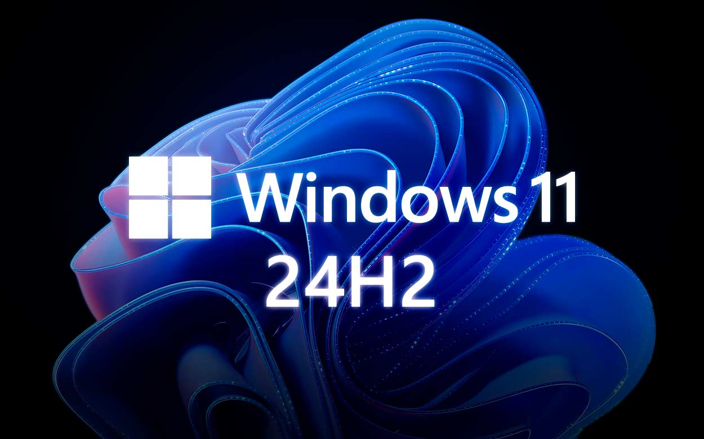
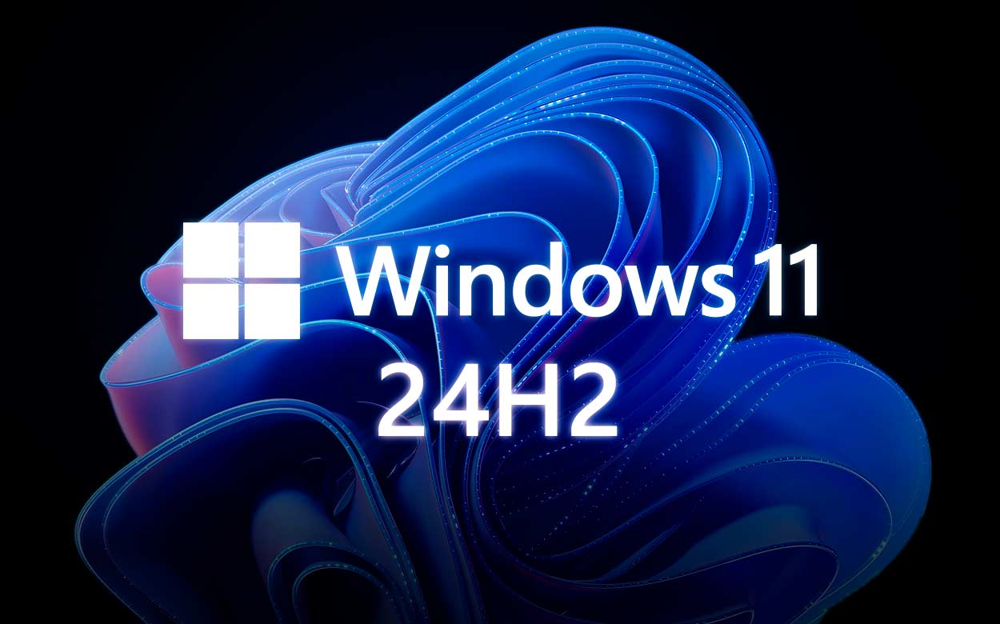

Mes Projets
Voici quelques-uns des projets sur lesquels j’ai travaillé :
Projet 1 : Mon portfolio
Portfolio que vous êtes en train de consulter. Il a été conçu pour présenter mes compétences, mon parcours et mes réalisations dans le domaine de l'informatique.
Il est construit en HTML et CSS, avec une attention particulière portée à l'ergonomie et à l'esthétique.
Ce site est un exemple de mon travail et de ma capacité à créer des interfaces web attrayantes et fonctionnelles.


Projet 2 : Mise en place d'un serveur
J'ai mis en place deux machines virtuelles avec VmWare : une sous Windows Server 2022 et une cliente sous Windows 11. J'ai relié les deux comptes au sein d'un domaine Active Directory, puis j'ai créé des unités d'organisation (OU) et assigné des stratégies de groupe (GPO) pour gérer les droits et la configuration des utilisateurs.

Projet 3 : blog de la classe BTS SIO
Ce projet a été réalisé en groupe de 5 personnes. Nous avons collaboré pour concevoir et développer le blog de la classe BTS SIO en HTML et CSS. Chacun a participé à la création des différentes pages, à la mise en forme du contenu et à l'amélioration de l'ergonomie du site. Pour organiser notre travail, nous avons utilisé une application comme Trello afin de mettre en place une méthode agile, en l'occurrence la méthode Scrum. Cela nous a permis de planifier les tâches, de suivre l'avancement du projet et de favoriser la communication au sein de l'équipe. Ce travail d'équipe nous a permis de renforcer nos compétences en développement web et en gestion de projet collaboratif.
Projet 4 : Application C# Calcul IMC
Ce projet a été réalisé individuellement avec Visual Studio en C#. J'ai développé une application Windows Forms permettant de calculer l'IMC (Indice de Masse Corporelle). L'utilisateur saisit son poids et sa taille dans l'interface graphique, puis l'application calcule automatiquement l'IMC et affiche le résultat ainsi qu'une interprétation (maigreur, normal, surpoids, etc.). Ce projet m'a permis de concevoir une interface utilisateur ergonomique, de gérer les événements et de mettre en œuvre la logique de calcul en C#.
Projet 5 : Gestion des sauvegardes et migrations Windows
Lors de mon stage à la mairie de Le Grau Du Roi, j’ai participé à un projet de grande importance visant à moderniser l’infrastructure informatique en mettant en place un système de sauvegarde fiable avec le logiciel Acronis et en procédant à la migration des postes de travail vers les versions les plus récentes de Windows. L’objectif était d’assurer la sécurité des données, la continuité des services administratifs et une meilleure compatibilité avec les outils récents utilisés au sein des services municipaux. Ce projet m’a permis d’aborder des problématiques concrètes liées à la gestion de parc informatique dans un environnement professionnel, tout en découvrant les enjeux spécifiques du secteur public et en appliquant des solutions techniques pour garantir la fiabilité et la performance des systèmes utilisés au quotidien par les agents de la mairie.
 
